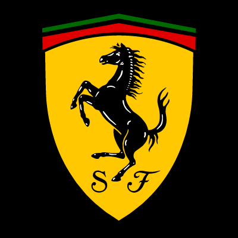

Ferrari Enzo
Enzo Highlights:
- Is a 12-cylinder mid-engine sports car named after the company's founder, Enzo Ferrari.
- It was developed in 2002 using Formula One technology, such as a carbon-fibre body, F1-style automated-shift manual transmission, and carbon fibre-reinforced silicon carbide (C/SiC) ceramic composite disc brakes.
- The Enzo Ferrari generates substantial amounts of downforce, which is achieved by the front underbody flaps, the small adjustable rear spoiler and the rear diffuser working in conjunction.
- The Enzo was designed by Ken Okuyama, the then Pininfarina head of design, and initially announced at the 2002 Paris Motor Show with a limited production run of 399 units.
- To produce the Ferrari Enzo, the Italian automakers combined the 288 GTO, the Ferrari F40, and its successor, the Ferrari F50. As the automakers learned a lot of valuable lessons producing these three previous super cars, it assisted them in creating the legendary Ferrari Enzo, the most loved out of the four.
- Upon its release, this influential hypercar was the world’s most technologically advanced car, featuring state of the art elements taken from super powerful Formula One cars, such as the variable-length induction system. Also, it featured high-tech electronic wizardry where all electronic systems communicate with each other for greater performance.

“If you can dream it, you can do it.” ...
Enzo Ferrari